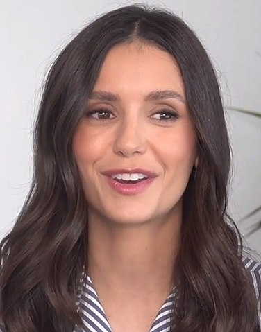

Biografia dos principais atores
VAMPIROS
Elena Gilbert(Nina Dobrev)
Elena é uma jovem órfã, melhor amiga de Bonnie e Caroline que se apaixona pelo vampiro chamado Stefan Salvatore, e mais tarde, por seu irmão, Damon, criando um triângulo amoroso. Quando Stefan bloqueia sua humanidade após ser chantageado por Klaus, Damon tem a oportunidade de se aproximar de Elena. Isso resulta em ela ser ainda mais atraída para o mundo sobrenatural e resulta em sua luta para sobreviver a eventos sobrenaturais na cidade. No final da 3ª temporada, Elena se transforma em vampira, mas ao desenrolar da série ela se torna humana novamente graças a cura do vampirismo. No final da 6ª temporada, a vida de Elena foi ligada à de Bonnie de tal forma que, enquanto Bonnie estiver viva, Elena permanecerá dormindo. Damon colocou Elena em um caixão e a escondeu em um depósito no Brooklyn pelos próximos 60 anos ou mais, enquanto esperava que ela acordasse. No final da série, a maldição de Elena é quebrada, ela se reúne com Damon e eles vivem uma vida longa e feliz junto com ela se tornando uma médica.Katherine Pierce(Nina Dobrev)
Katherine Pierce, nascida Katerina Petrova, fazia parte de uma família de viajantes do século XV. Ela é búlgara e foi banida para a Inglaterra após ter um filho ilegítimo fora do casamento. Ao conhecer Klaus e Elijah, dois dos vampiros originais, ela é cortejada por Klaus, mas como ele passa muito tempo longe, ela e Elijah passam a se conhecer e se apaixonar. Nesses dois anos com os Mikaelsons, ela descobre que é uma doppelgänger de Petrova - o que significa que ela pode ser sacrificada para libertar o lado lobisomem de Klaus. Ela enganou outros vampiros para transformá-la, tornando-a inútil para Klaus. Ele queria vingança, então foi para a casa da família dela e matou todos que ela amava e deixou seus cadáveres para ela encontrar espalhados pela propriedade. Katherine então passou 500 anos correndo e se escondendo para escapar de sua ira. Ela chega em Mystic Falls 3m 1864, onde Stefan e Damon Salvatore se apaixonam por ela e também por eles. Ela escapa da queima de vampiros na cidade, e dá aos irmãos seu sangue para que, se eles fossem mortos, eles não tivessem que morrer, ambos os irmãos se transformavam em vampiros após serem baleados por seu pai após tentar resgatar Katherine de ser queimada, embora ela tinha seu próprio plano e isso quase o arruinou. Damon passa 145 anos tentando libertar Katherine de uma tumba, embora ela não esteja lá quando ele a abre. No último episódio da primeira temporada, Katherine retorna a Mystic Falls disfarçada de Elena, então ela beija Damon, consegue entrar na casa de Elena e corta os dedos de John Gilbert para remover seu anel mágico ressuscitador, e começa a esfaqueá-lo no estômago. Seu principal motivo para voltar é que ela nunca deixou de amar Stefan, um sentimento recíproco que Stefan às vezes decide esconder.
Stefan Salvatore(Paul Wesley)
Stefan Salvatore é um vampiro de bom coração e afetuoso e o completo oposto de seu irmão mais velho, Damon Salvatore. Mais tarde na série, Stefan volta aos seus velhos hábitos como um Estripador para salvar Damon de uma mordida de lobisomem. Seu papel se torna mais antagônico, depois de ser forçado a desligar sua humanidade. Eventualmente, ele retorna a ser menos perigoso e se reconcilia com Elena, mas o relacionamento não dura muito. Ele se torna humano novamente e se casa com Caroline Forbes na 8ª temporada, sendo morto posteriormente no final da série, quando decide se matar para ter certeza de que Katherine Pierce não viveria para voltar a Mystic Falls.
Damon Salvatore(Ian Somerhalder)
Damon é o irmão vampiro malévolo de Stefan. Ele é geralmente considerado egoísta e manipulador, mas mais tarde começa a mostrar um lado mais carinhoso. Embora seu amor por Elena seja inicialmente unilateral, ela começa a desenvolver sentimentos por ele enquanto trabalham juntos para salvar Stefan depois que ele cedeu ao seu lado do Estripador. Eles começam a namorar na 4ª temporada e continuam a namorar (com alguns rompimentos ao longo do caminho) até que Elena seja colocada em seu sono profundo no final da 6ª temporada. Eles se reencontram no final da série, quando Elena acorda do feitiço do sono quando Bonnie o desfez. Ao longo da série, Damon é capaz de reparar seu relacionamento com Stefan. E se torna o melhor amigo, parceiro, confidente muito íntimo e próximo de Bonnie Bennett. Também continua sendo amigo de Alaric.
Caroline Forbes-Salvator(Candice King)
Caroline Forbes é melhor amiga de Bonnie e Elena, que era insegura e muitas vezes com ciúmes de Elena no início, mas depois de se tornar uma vampira na segunda temporada, ela se tornou mais atenciosa e simpática. Neurótica, mas adorável, Caroline tem sido o interesse amoroso de muitos personagens masculinos. Inicialmente serviu como pião de jogo para Damon na 1ª temporada, pela qual ela ainda o odeia, ela teve relacionamentos sérios com Matt, Tyler e Alaric, e foi por muito tempo alvo da adoração de Klaus. Através de mágia, Caroline gerou em seu ventre as gêmeas de Alaric e Jo, onde se apegou as meninas se tornando uma mãe atenciosa. No final da oitava temporada, Caroline se casa com Stefan Salvatore.
Victoria "Vicki" Donovan(Kayla Ewell)
Vicki Donovan (vagamente baseada em Vickie Bennett dos romances) é a irmã mais velha de Matt Donovan. Vicki era uma viciada em drogas problemática, cuidada por Matt pois sua mãe os havia deixado. No início da série, ela namorava Tyler Lockwood. Vicki e Jeremy Gilbert transaram algumas vezes, mas Vicki não queria que as pessoas descobrissem, já que Jeremy era mais jovem que ela. Mais tarde, reconhecendo que tinha sentimentos por Jeremy, Vicki termina com Tyler e começa um relacionamento com Jeremy. Mais tarde, ela foi transformada em vampira por Damon. Ela foi incapaz de controlar sua sede de sangue e quando ela atacou Jeremy, Stefan a matou. Stefan e Damon fazem parecer que Vicki deixou a cidade. Seu corpo é mais tarde encontrado por Caroline Forbes, devastando Matt e Jeremy.
Niklaus "Klaus" Mikaelson(Joseph Morgan)
Klaus é um dos 5 irmãos vampiros originais filhos de Esther (feiticeira) e Mikael (vampiro). Sua mãe e seu pai eram ricos proprietários de terras que viviam na Europa Oriental. A mãe dela traiu o marido, e Klaus era um produto desse caso. Mais tarde, o pai de Elijah perseguiu e matou o pai de Klaus (que era um lobisomem), dando início à guerra entre as duas espécies. Elijah fica com Klaus para ajudá-lo a encontrar um meio de quebrar a maldição "pelos últimos mil anos". Ele era um nobre no final do século XV na Inglaterra, onde conheceu Katerine Petrova. Elijah revela a Elena que Klaus criou o mito da maldição do Sol e da Lua para encontrar a pedra da lua e o Doppelgänger (duplicata) Petrova para quebrar a verdadeira maldição, que manteve o lobo adormecido ao seu lado e que seu verdadeiro objetivo é despertar aquele lado adormecido, a fim de criar uma raça mais forte do que vampiros e lobisomens. Na terceira temporada, ele percebe que o sangue de Elena é a chave para criar mais vampiros híbridos, então ele força Stefan a desligar sua parte humana e ficar observando Elena. Klaus também se apaixona por Caroline, no início ela o rejeita, mas na quinta temporada ela confessa sentir atração pelo coração negro do híbrido original em troca da promessa de deixar Mystic Falls, para sempre e nunca mais voltar. Ele aceita e eles têm uma grande aventura na floresta.
Lorenzo "Enzo"(St. John Michael Malarkey)
Enzo é um vampiro que estava sob a prisão da sociedade Agostine. Ele era companheiro de cela de Damon Salvatore na década de 1950, quando este foi capturado pelos agostinianos. Ele e Damon reviveram sua amizade enquanto ele procurava por sua amante perdida, Maggie. No episódio "Man on Fire", Enzo desligou sua humanidade após descobrir a verdade sobre a morte de Maggie e mais tarde ele morre de propósito por Stefan, tendo seu coração partido. Ele foi ressuscitado por Bonnie no final da temporada, e mais tarde se tornou o interesse amoroso de Bonnie antes de ficar sob o controle do monstro do cofre no final da temporada 7. Ele é morto por Stefan sem humanidade e cuida de Bonnie na vida após a morte na 8ª temporada.Nina Dobrev também interpreta Amara, uma duplicata milenar de Katherine Pierce, que aparece na quinta temporada. Amara é uma jovem que foi enfeitiçada como âncora para o Outro Lado, pela bruxa Tessa, em vingança a Silas.
Paul Wesley também interpreta Silas, uma duplicata milenar de Stefan Salvatore, que aparece na quinta temporada. Silas é um imortal de 2 mil anos que pretende usar a cura no sangue de Katherine para morrer, e se encontrar com sua amada Amara no Outro Lado.
Paul Wesley também interpreta Tom, uma segunda duplicata de Stefan Salvatore, que aparece na quinta temporada. Tom é um paramédico de Atlanta, que foi sequestrado por membros dos Viajantes.
BRUXAS
Bonnie Bennett (Kat Graham)
Bonnie Bennett é a melhor amiga de Elena e Caroline, e é uma bruxa extremamente muito poderosa. Ela desenvolve e controla seus poderes com a ajuda de sua avó, Sheila ou "Vovó", outra bruxa da família. Ela é frequentemente capaz de usar sua magia para ajudar o grupo. Bonnie ressuscitou, protegeu e salvou milhões de vezes seus amigos e pessoas que ela ama. E embora ela inicialmente odeie vampiros, particularmente Damon, ela acaba gostando deles e se torna a melhor amiga de Damon depois de ficar presa em um mundo prisão com ele por quatro meses. Bonnie perdeu e recuperou sua habilidade de fazer mágica várias vezes ao longo da série. Ela teve breves relacionamentos como: o vampiro Ben McKittrick, do qual ela descobriu ser um vilão, também se envolveu com Jamie, o filho adotivo de sua mãe biológica Abby Bennett. Ela teve breves sentimentos pelo bruxo Luka Martin, Bonnie também passou as temporadas 2 a 5 em um relacionamento intermitente com o irmão de Elena, Jeremy. Ela é alvo da admiração e amor secreto de Malachai “Kai” Parker, o vilão principal da 6ª temporada e da 8ª temporada. Também era uma crush secreta de Nora Hildegard, uma das hereges, da qual, Bonnie se tornou amiga. Nora descrevia Bonnie como: bonita, inteligente e leal. E mais tarde Bonnie se envolveu com Enzo. Na 7ª temporada, Bonnie enfrenta o desafio de ter recebido a maldição dos caçadores de Rayna Cruz, o que coloca todos os seus amigos vampiros em risco. Na 8ª temporada, em um dos seus inúmeros feitos, Bonnie salva Mystic Falls do fogo do Inferno, ganha uma batalha psíquica contra o Cade, o maior psíquico do mundo. Cria um mundo prisão para o Kai e o aprisiona lá por muitos anos. Também consegue desfazer facilmente o feitiço poderoso que Kai Parker tinha colocado em Elena, e mais tarde é vista indo viajar pelo mundo e viver a sua vida por inteiro, como tinha prometido ao amor de sua vida, Enzo.LOBISOMENS

Tyler Lockwood(Michael Trevino)
Tyler Lockwood é o ex-namorado de Vicki e rival de Jeremy. Ele é muito importante e reconhecido em Mystic Falls graças aos seus pais. Na segunda temporada, é descoberto que a família Lockwood carrega o gene do lobisomem em seu sangue, então pode-se presumir que essa maldição também está em Tyler. Caroline confessa que ela é uma vampira e ela sabe sobre a natureza de Tyler, então ambos mantêm seu segredo um do outro. Esse segredo leva os dois a sentir algo entre eles. Ele também descobre que Damon foi quem matou seu tio Mason, o que o faz ficar confuso e deixar Mystic Falls com Jules, mas quando sua mãe está em perigo, ele retorna para resgatá-la. Klaus o transforma em um híbrido e por ser seu senhor mestre, Tyler faz tudo o que ele manda. Ele faz amizade com Jeremy, mas o trai ao seguir as ordens de Niklaus. Ele reativa seu gene de lobisomem e deixa a cidade no final da 6ª temporada. Ele aparece em alguns episódios da 7ª temporada, protegendo o caixão de Elena. Ele é morto por um Damon possuído na 8ª temporada.
HUMANOS

Jeremy Gilbert(Steven R. McQueen)
Jeremy Gilbert é o irmão mais novo de Elena. No início da série, Jeremy fica emocionalmente abalado com a morte de seus pais e começa a usar drogas. Ele estava apaixonado por Vicki Donovan, outra usuária de drogas, causando uma rivalidade com seu namorado, Tyler Lockwood. Vicki depois termina com Tyler e começa um relacionamento com Jeremy. No entanto, Jeremy testemunha Stefan matar Vicki (depois que Damon a transformou em vampira). A pedido de Elena, Damon faz Jeremy esquecer isso, e Jeremy fica mais estável e para de usar drogas. Jeremy também se relaciona com uma vampira chamada Anna, que é morta por seu tio John Gilbert. Mais tarde, ele recebeu o anel de John, que o protege de uma morte causada por qualquer coisa sobrenatural. Jeremy ao longo da série chegou a se relacionar com Bonnie Bennett, ver espiritos de vampiros, se tornou um caçador de vampiro, foi morto por um imortal chamado Silas e ressucitado por Bonnie. Após a morte de Bonnie na sexta temporada, Jeremy recuperou suas habilidades de caçador e chegou à conclusão de que era hora de seguir em frente com sua vida e partiu para Santa Fé, no Novo México

Matt Donovan(Zach Roerig)
Matt Donovan é irmão de Vicki Donovan, que já namorou Elena, mas foi facilmente substituído pela chegada de Stefan, além da deterioração de seu relacionamento ao longo dos meses após a morte dos pais de Elena. Ele não tem ideia de que Vicki está morta e entra em um relacionamento com Caroline. Na segunda temporada, seu relacionamento com Caroline é enfraquecido, pois ela não pode dizer a verdade sobre sua natureza, pois tem medo de machucá-lo. Ele gradualmente percebe que algo está acontecendo entre Tyler e Caroline. Pouco depois, ele descobre que Caroline é uma vampira e na tentativa de descobrir o que aconteceu com sua irmã, ele usa verbena para fazer Caroline acreditar que ele se esqueceu de tudo e assim contar a sua mãe. Ele comete suicídio para contatar Vicki, mas Bonnie o revive e ele pode ver fantasmas como Jeremy. Na sexta temporada ele se torna um policial. Na sétima temporada, ele decide ver a diferença entre os vampiros bons e os vampiros ruins e tenta matar os vampiros ruins erradicando-os de Mystic Falls.
Alaric J. "Ric" Saltzman(Matthew Davis)
Alaric Saltzman é um professor de história, caçador de vampiros e interesse amoroso por Jenna. Davis deixou a série no final da terceira temporada, depois que Alaric foi morto. Seu personagem voltou a ser regular após a 5ª temporada, depois que ele foi ressuscitado. Seu vampirismo é destruído por magia, transformando-o em humano novamente após ser salvo por Josette Laughlin e os dois começam a namorar. Jo fica grávida e eles planejam se casar, mas ela é assassinada por seu irmão Kai em seu casamento. A família de bruxas de Jo conseguiu transferir os bebês para Caroline, que deu à luz suas gêmeas. Caroline e Alaric se mudam para Dallas, Texas juntos e começam um relacionamento, mas terminam quando Caroline decide ficar com Stefan após seu retorno no final da temporada 7. Ele estabelece um internato com Caroline para adolescentes sobrenaturais no final da série.